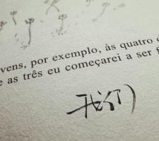
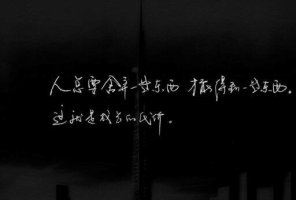
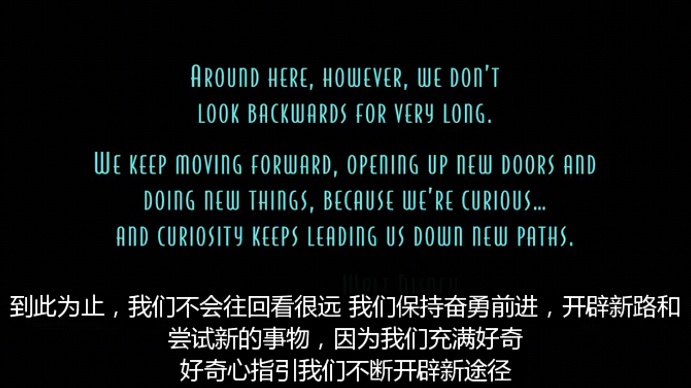
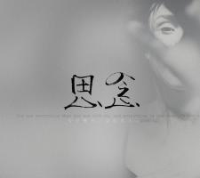
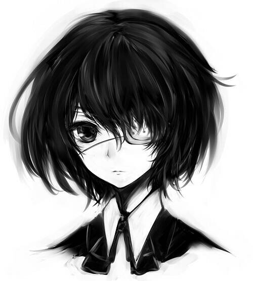
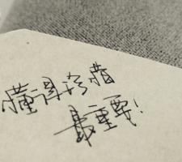

-

序言
我冥冥中相信，所有的“我们”， 都会在经过很多失落和庆幸，经过很多选择和后悔 ——或不后悔之后——成为了现在的自己：平凡，痛并快乐着，勇敢生活。
总有一些事情，是共有的记忆，或者说，将成为共有的记忆。要谢谢时光，谢谢命运，谢谢所有让我快乐或痛苦的人与事。
-
惊蛰
包括：远镇 北方 花朵之蓝
春别 冰是睡着的水 薄奠 灯下夜祷 流景闲草 我不能悲伤地坐在你身旁 -
《远镇》
生命若给我无数张脸，我永远选择最疼痛的一张去触摸。
一些事情渐渐变得淡灭,你知道它存在过,但却已经忘记怎样的存在过。 有时候沿着一个陌生人的生命脉络向深处追溯，就清晰地感到每个人灵魂深处的雷同。 -
《北方》
人与大地皆有着淡定朴素的容颜，昭示着千百年的平凡历史。
如果我们不想对人事失望，惟一的方法就是不要对它寄予任何希望。...这不是绝望，这是生存下 去的惟一途径，亦是获取幸福感的前提。 -

《花朵之蓝》
靠近，只是因为害怕孤独。
再见。我知道，若没有离别，成长也就无所附丽。 -

《流景闲草》
感情用力过度，亦充满裂痕。
假如一个人的梦想无法实现，那么仅有一个姿势也是好的。比如摆一个飞翔的姿势， 或者在睡前说句祝福在梦中能见到大海的话。 -

《薄奠》
生命只是一把尺子，...青春在这样一把尺子上占据的只是一段短暂的跨度， 一成不变地被几个细密的标识所代表。而我们观瞻它的角度，已然像日晷般记录了我们与它的渐行渐远。
-

清明
包括：书信 蓝颜 幻听
故城 昨天 城事 礼记 被窝是青春的坟墓 -

《蓝颜》
心里有个人放在那里，是件收藏，如此才填充了生命的空白。
太阳尚远，但必有太阳。 -
《幻听》
书里说，“生命中许多事情，沉重婉转至不可说”， 我便这样彻头彻尾地相信，拍案而起，惊怯，无路可退，相信着以自我凌虐的姿势挣扎的人中我并不孤单。
-

《故城》
我想去相信某个人，非常想。而且一直这么相信着。
只能冷暖自知，再自知，再自知，自知到灵魂的深处去孑然独立，在这漫长的路途中一直跑下去，跑向无谓的投奔。 -

《昨天》
在过去那些浅薄无知的伤春悲秋之中，我写不下归期。
我们在电影里看着别人替我们过着梦里的人生，看着他们替我们爱，替我们死，动容之时流下眼泪 ——擦干之后，那不过是灰飞烟灭的幻象，生活仍然一无所有。 -

少年残像
被彻底颠覆的生活如一道未尽的路横亘在前， 世界之大，我却不知其折或远。
他是我的少年，也是我自己。 -

那些话儿
我们都对了还是错了，我们都爱了但是忘了， 走的时候你哭了还是怎的，我只是疼了但还是笑了。
制作人：孙从琛 联系方式：18852142442